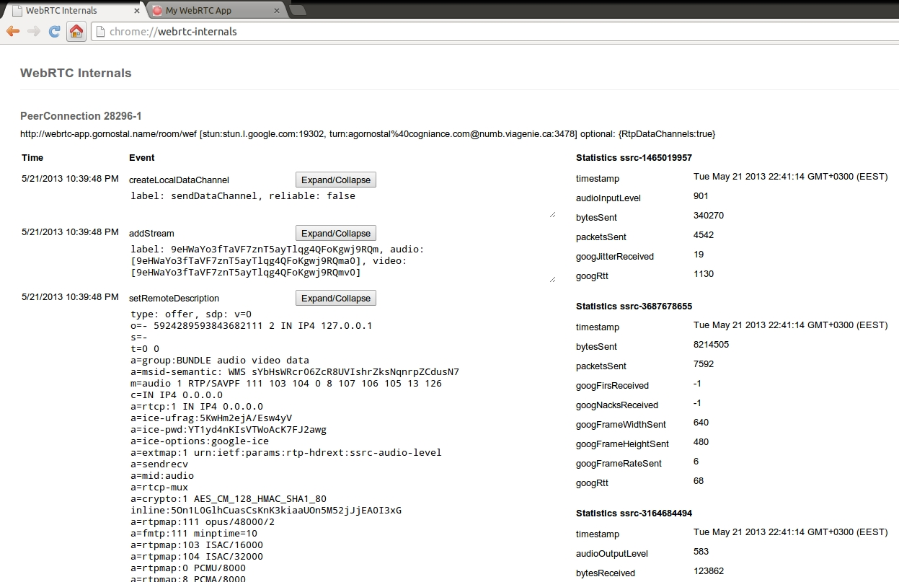

Introduction to WebRTC
Demo
http://webrtc-app.gornostal.name/
Works in Chrome 26 or higherSource - https://github.com/gornostal/my-webrtc-app
WebRTC components
- MediaStream (aka getUserMedia)
- RTCPeerConnection
- RTCDataChannel
MediaStream
(aka getUserMedia)
window.URL = window.URL || window.webkitURL;
navigator.getUserMedia = navigator.getUserMedia || navigator.webkitGetUserMedia || navigator.mozGetUserMedia || navigator.msGetUserMedia;
navigator.getUserMedia(
{video: true, audio: true}, // constraints object
function(localMediaStream){ // success callback
var video = document.createElement("video");
video.autoplay = true;
video.src = window.URL.createObjectURL(localMediaStream);
document.body.appendChild(video);
},
function(error){ // failure callback
console.error(error);
}
);
MediaStream demo
simpl.info/getusermedia
idevelop.ro/ascii-camera
webcamtoy.com
(requires WebGL)screen sharing
(works in Chrome with enabled screen capture support)RTCPeerConnection
Audio and video communication between peers
- remove noise from audio and video
- codec handling
- peer to peer communication
- security
- bandwidth management
RTCDataChannel
API for high performance, low latency, peer-to-peer communication of arbitrary data
var pc = new webkitRTCPeerConnection(servers,
{optional: [{RtpDataChannels: true}]});
// only unreliable data channels are supported in Chrome
var dataChannel = pc.createDataChannel("sendDataChannel",
{reliable: false});
dataChannel.onopen = onSendChannelStateChange;
dataChannel.onclose = onSendChannelStateChange;
// usage
dataChannel.send('data');
dataChannel.onmessage = function(e){
console.debug('Received message', e.data);
};
RTCDataChannel demo
simpl.info/dc
sharefest.me
How to establish a P2P connection?

Session Traversal Utilities for NAT (STUN)
 Google's free STUN server:
Google's free STUN server: stun.l.google.com:19302
Traversal Using Relay NAT (TURN)
 Free STUN/TURN server http://numb.viagenie.ca/
Free STUN/TURN server http://numb.viagenie.ca/
Interactive Connectivity Establishment (ICE)

WebRTC data pathways

WebRTC connection process

chrome://webrtc-internals
Caveats
- Peers must be present with local streaming video before sending offer/answer SDP
- Set remote SDP before adding ICE candidate
- Once remote media starts streaming stop adding ICE candidates
- Never create 'Answer SDP' until you get the 'Offer SDP'
Interoperability
Firefox Nightly (as of 1/30/13) and
Chrome M25 Beta
and later are interoperable, but currently require a "small" degree of adaptation on the part of the calling site.
More here: https://sites.google.com/site/webrtc/interop
Libraries
webRTC.io
peerjs
SimpleWebRTC
easyRTC
Services
Use SaaS for signaling

Learn more
- webrtc.org
- Video of WebRTC session at Google I/O 2013, (slides)
- apprtc.appspot.com (source code)
- Blog WebRTC Experiments & Demos by Muaz Khan
- html5rocks.com/en/tutorials/webrtc/basics/